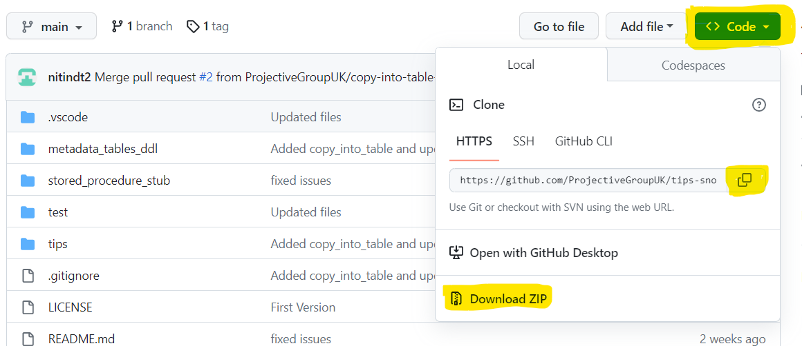

Getting Started
Great, now that you have made your mind to give TiPS a try, let's get you started. We are pretty confident that you will find it worth to give it a try.
Python (3.8 or later) is required to run TiPS using the Snowpark Client API or to test the code before uploading it to Snowflake. See the Python's official website for installation instructions.
TiPS Setup
Presumably you are currently browsing through the repository on GitHub or perhaps you have already downloaded the repository to your PC. If you haven't yet downloaded the repository, let's get it downloaded first.
Downloading Repository
TiPS can be downloaded from GitHub repository, either by cloning the repository or downloading as zip file. When on the repository page, click on the "<> Code", as shown in yellow highlighting, in screenshot below:
.
From here you can either clone the repository to your PC or download the source code as Zip file.
If you have downloaded the zip file, unzip it into a local folder. Folder name can be as per your choice, however if you create it as c:\GitHub\tips-snowpark (on Windows) or /GitHub/tips-snowpark (on Unix based OS, including Mac), it will make it much easier for you to copy/paste the commands from the instructions.
Create Python Virtual Environment
Now that you have got the code on your PC in your desired folder location, open the code in editor of your choice (e.g., VSCode or PyCharm).
Open the terminal windows from your code editor (which should ideally open the terminal in repository folder)
OR
if you prefer, open command prompt/PowerShell (Windows) or terminal window (Linux/Mac) and navigate to repository folder.
For example:
- Windows -
cd C:\GitHub\tips-snowpark\ - Linux/Mac -
cd /GitHub/tips-snowpark - Bash Terminal -
cd /c/GitHub/tips-snowpark/
It is preferable to use Bash Terminal on Windows PC, as command examples in the instructions given below are from bash terminal. On Windows PC with Git installed, Git Bash should be present.
Once in the terminal, run the following command to setup python virtual environment:
$ python -m venv venv (this would create a folder named venv in your current location)
Next run command:
$ source venv/Scripts/active (to activate virtual environment)
Next run command:
$ pip install -r requirements.txt (this would install all required dependencies to virtual environment)
Now your environment is all set, so we can mode to next step.
Setup Database Objects
There is a folder named metadata_tables_ddl, which contains SQL scripts for database objects that are part of TiPS. Execute these scripts on Snowflake, in the order they are listed. You can run these in any schema of your choice, but if there is no preference, suggested schema is TIPS_MD_SCHEMA (create schema or use existing one, as deemed fit)
process.sql: This is DDL script forPROCESStable.process_cmd.sql: This is DDL script forPROCESS_CMDtable.process_log_seq.sql: This script creates a sequence, needed forPROCESS_LOGtable.process_log.sql: This is DDL script forPROCESS_LOGtable.process_dq_test.sql: This is DDL script forPROCESS_DQ_TESTtable. This script also populates standard DQ Test data shipped with the code.process_cmd_tgt_dq_test.sql: This is DDL script forPROCESS_CMD_TGT_DQ_TESTtable.process_dq_log.sql: This is DDL script forPROCESS_DQ_LOGtable.vw_process_log.sql[optional]: This is script for a view to be built on PROCESS_LOG table. It flattens out the JSON Log into tabular rows for easier interpretation from within the database.tips_internal_stage.sql: This script creates an internal named stage, which would need to upload our code base, which is referenced by stored procedure.
Also, inside stored_procedure_stub folder, there are couple of scripts available. These are for stored procedures used by TiPS. Please compile create_temporary_table.sql script. This stored procured is needed even when we run TiPS from command line (using Snowpark Client API)
Now that we have created Database objects required by TiPS, we are ready to move to the next step to setup our first sample pipeline to test run TiPS.
Setup Sample Data Pipeline [optional]
To see TiPS in action after the setup, you can follow the steps below to setup a trial data pipeline without having to write any code yourself.
For setting up a trial data pipeline, we have supplied with SQL scripts that you can run on your Snowflake account. These scripts are in sample_pipeline folder under test folder, within this repository.
Schema Script(s)
There are couple of scripts in "test -> sample_pipeline -> schema" folder. Please run these scripts to create two schemas where would setup tables and views for our pipeline. Please run both tips_test_dimension.sql and tips_test_transform.sql scripts.
Sequence Script(s)
Next, please run the scripts available in "test -> sample_pipeline -> sequence" folder.
Table DDL Script(s)
Next, please run the scripts available in "test -> sample_pipeline -> table" folder.
View Script(s)
Next, please run the scripts available in "test -> sample_pipeline -> view" folder.
Metadata Script(s)
Finally, for setup of data pipeline, run the script available in "test -> sample_pipeline -> metadata" folder. This script sets up TiPS metadata needed for execution of data pipeline.
Execute Data Pipeline (using Snowpark Client API)
Now that you have setup a trial data pipeline using table/views and metadata, it is now a good time to test whether TiPS is working as expected.
To do that please follow the steps below:
First, we need to setup a file with your database credentials that TiPS would use to connect to your Snowflake instance. To do that, inside test folder, create a file named .env (There is no filename, just the extension. This file is already configured to be ignored from getting pushed to Git repository). Once you have the file in test folder, open it in any of your favourite text editor and add your database credentials as below (change the values appropriate to your account between <<>>):
SF_ACCOUNT=<<Snowflake Account ID>>
SF_USER=<<Snowflake User ID>>
SF_PASSWORD=<<Your Snowflake Password>>
SF_ROLE=<<Snowflake Role to use>>
SF_WAREHOUSE=<<Snowflake Warehouse to use>>
SF_DATABASE=<<Snowflake Database to connect to>>
SF_SCHEMA=<<Snowflake schema where TiPS metadata information has been setup>>
For executing TiPS from command line using Snowpark Client API, we will run it with run_process_log.py which is available inside test folder. However, before we run that, we would need to set an environment variable on the terminal, for relative paths in imports to work properly. Please use the command below as an example and tweak as necessary according to your folder structure setup and/or OS requirement (below is the example for being run on a Bash terminal)
you would need to set PYTHONPATH environment variable, with path that of your github folder
E.g.
export PYTHONPATH=/c/GitHub/tips-snowpark
Now navigate to test folder, if you are not already in it.
cd /c/GitHub/tips-snowpark/test
And then to execute the trial pipeline that we have setup in previous steps, you can execute one of the commands below:
Serial Execution (Step executed serially following topolical sorting):
python run_process_local.py -p TIPS_TEST_PIPELINE -v "{'COBID':'20230101', 'MARKET_SEGMENT':'FURNITURE'}" -e Y
Parallel Execution (Step executed parallely utilising Snowflake Tasks):
python run_process_with_tasks_local.py -p TIPS_TEST_PIPELINE -v "{'COBID':'20230101', 'MARKET_SEGMENT':'FURNITURE'}" -e Y
With parameters:
- -p -> We are passing in Data Pipeline Name that we have setup in previous steps.
- -v -> Here we are passing in the bind variable values in JSON format, that are used by our pipeline. This is an optional parameter and is only required when bind variables are used in the pipeline.
- -e -> Here we pass in Y/N flag, for indicating whether we want to execute the SQLs generated by TiPS or want to generate the SQLs and outputted for debugging purpose. If Y is passed, then generated SQLs are executed on the database. If N is passed, then generated SQLs are only outputted to the log and are not executed in the database.
Once the above command is executed and if everything has been setup correctly, you should start seeing the log messages on terminal window displaying how execution of pipeline is progressing. You should also notice a log folder created inside test folder, where log files are generated.
Please Note: Parallel execution relies on parent_process_cmd_id column setting in PROCESS_CMD table. Further details about this column can be checked in Reference Guide
Execute Data Pipeline (inside Snowflake with Stored Procedure)
So, if you have reached this step, presumably everything with setting things up, has worked as expected. This step is needed, if you want to run the data pipelines from inside the database, executing via stored procedure. The advantage of running it with Stored procedure are:
- Stored procedure runs with owner privileges. So, the user executing it, doesn't need read/write privileges on underlying database objects. Only execution privilege is required on the stored procedure.
- Everything runs inside the database, so data doesn't leave the data platform.
- Once the setup is done, other users/tools can execute data pipelines without needing Python or other setup that we needed to do in steps above.
Before we compile the stored procedure, we would need to upload TiPS core code to Snowflake internal stage, that we created in step above.
Package TiPS code as a zip file and upload to a stage
There is a "tips" folder inside the repository. Bundle this folder with its content to a zip file (preferably named as tips.zip). If you are on windows, you can easily do that from file explorer, by navigating to repository folder and then right click on tips folder and select "compress to zip file" option (or "send to compressed file" on previous versions of windows). This should produce tips.zip file inside your repository folder.
Compile RUN_PROCESS stored procedure
RUN_PROCESS stored procedure is used to execute data pipelines in serial mode. To create this stored procedure, please execute the script run_process.sql, which is available inside stored_procedure_stub folder.
Compile RUN_PROCESS_WITH_TASKS stored procedure
RUN_PROCESS_WITH_TASKS stored procedure is used to execute data pipelines in parallel mode. To create this stored procedure, please execute the script run_process_with_tasks.sql, which is also available inside stored_procedure_stub folder.
Execute Data Pipeline
Now that stored procedures are compiled in the database, you can execute data pipelines with TiPS directly inside from Snowflake like any other stored procedure. For example, to run the sample pipeline, you can run one of the following commands from within Snowflake IDE:
Serial Execution (Step executed serially following topolical sorting):
call run_process(process_name=>'TIPS_TEST_PIPELINE', vars=>'{"COBID":"20230101", "MARKET_SEGMENT":"FURNITURE"}', execute_flag=>'Y')
Parallel Execution (Step executed parallely utilising Snowflake Tasks):
call run_process_with_tasks(process_name=>'TIPS_TEST_PIPELINE', vars=>'{"COBID":"20230101", "MARKET_SEGMENT":"FURNITURE"}', execute_flag=>'Y')
Please Note: Parallel execution relies on parent_process_cmd_id column setting in PROCESS_CMD table. Further details about this column can be checked in Reference Guide
In both the commands above, parameter values are passed in named-parameter way, but you can just pass in values in positional way, without explicitly specifying parameter name. Also, var parameter value is needed in JSON format where bind variables are used in the pipeline. If bind variables are not used, just pass in NULL instead.
All Done! You are now set to start using TiPS in its full swing. Please do checkout TiPS Conventions and Reference Guide for further useful information.